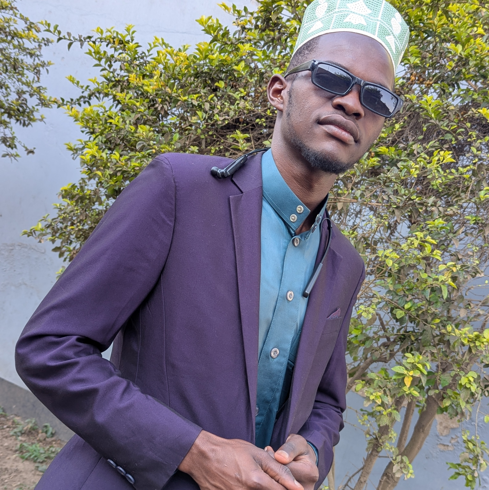
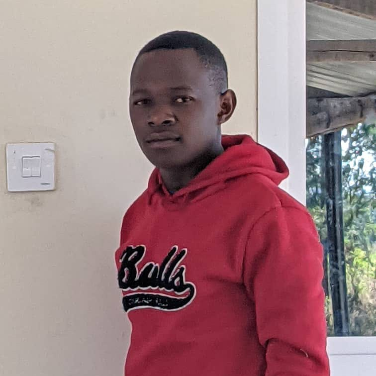
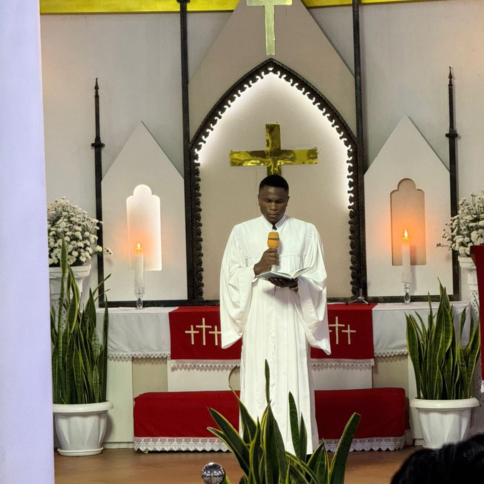
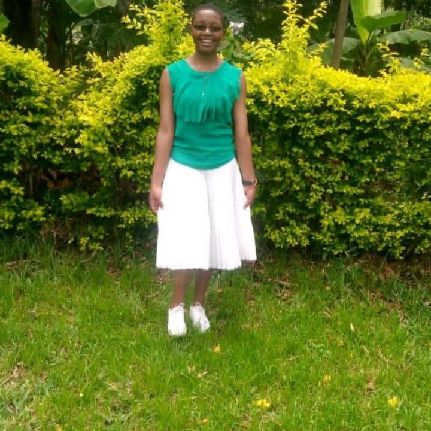
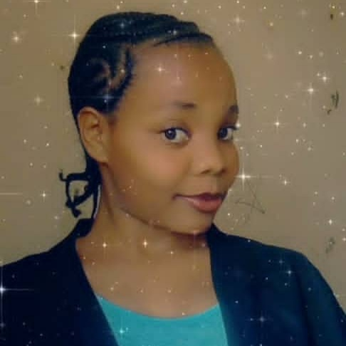
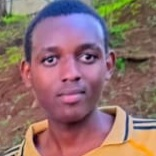
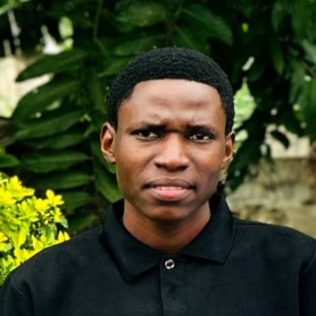
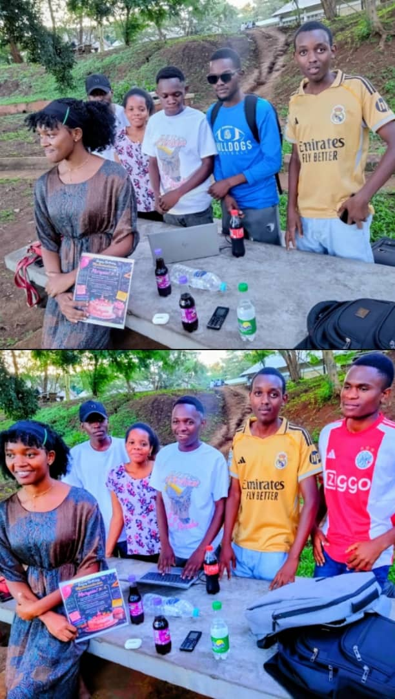
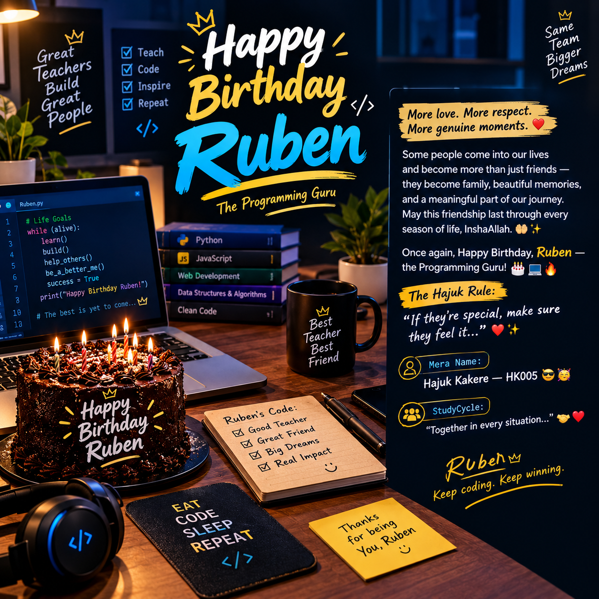
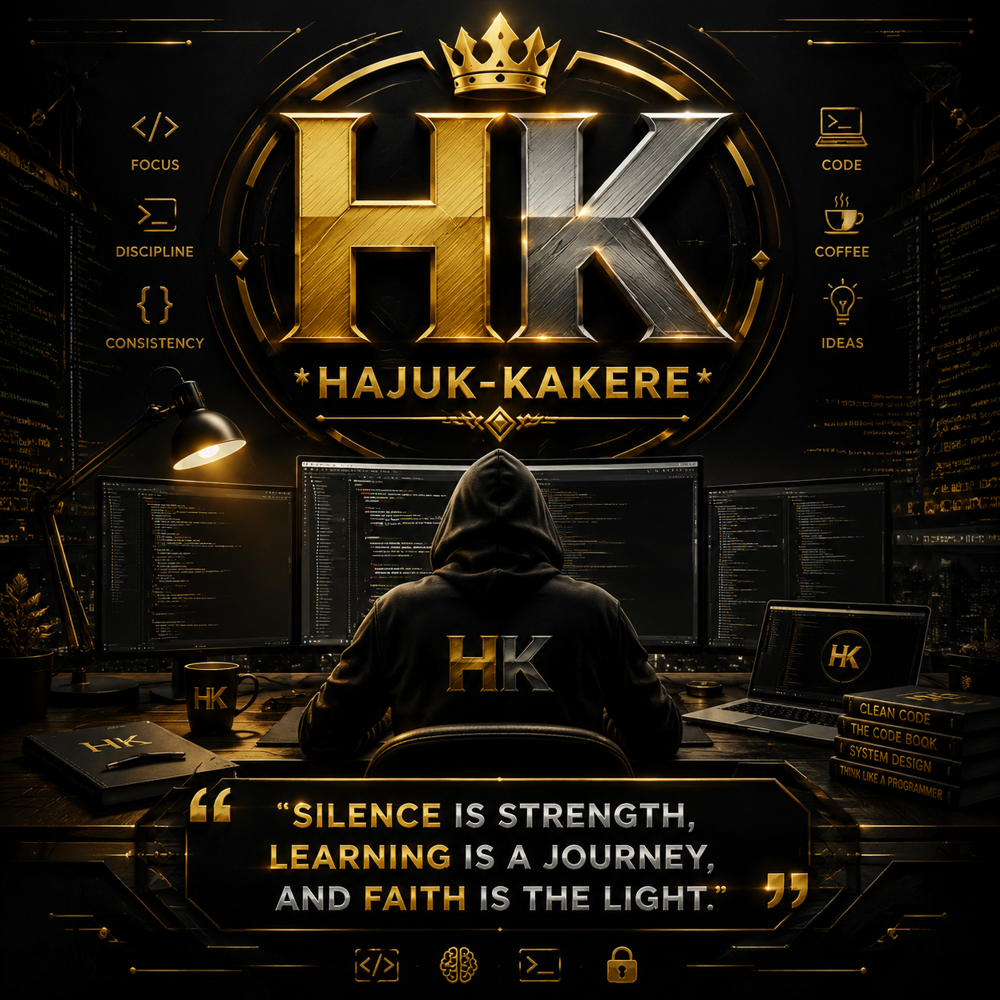

Hajuk kakere
Group leader: A learner who helped organize the group and believes in teamwork, growth, and sharing knowledge.
A First-Year Learning Journey of Seven Minds
This is the journey of seven minds who met and began creating their own story without knowing how meaningful their journey would become. The following are the important parts of this journey
This is a group of seven students who shared khowledge, supported each other, and build a strong learning journey during their first year.

Group leader: A learner who helped organize the group and believes in teamwork, growth, and sharing knowledge.

Organizer & Graphic Design Mentor: The person who helped organize group activities and shared knowledge About Graphic Design.

Programing Mentor & Group: A person who shared programming knowledge and guided the group through technical challenges.

Mathematics Mentor: A calm and committed learner who helped others understand Mathematics through dedication and patience.

Database Management Mentor: A calm and committed learner who shared knowledge about Database Management and supported the group's learning journey.

Team supporter & Graphic Design: A supportive member who participated actively in learning and contributed to Graphic Design.

Nertwork Learning supporter: A member who participated in studies and shared knowledge from nertwork lectures.
Moments we shared;
Learning become easier because we were willing to support each other.

A beatiful moment we shared together, filled with laughter, friendship and memories that became part of our first year journey.
Beyond academics, we created a connection based on cooperation and respect.

Even though we were miles apart, we still brought the party together for
Programming Guruu Ruben
On this special day of may life, I wanted to create something that means more
just celebrating a moment. i wanted to take a moment to appreciate the people
who have been part of mt journey throughout my first year.
Looking back, I'm grateful for all the lessons we learned together, the
challenges we faced and overcome, and the most importantly, the friendship
and memories we created along the way. These are moments I will always carry
with me.
Thank you, The Study Cycle, for being such an important part of my story. This website is my small way of saying thank you for every lesson, every word of encouragement, every bit support, and every meaningful moment we've shared
This journey wouldn't have been the same without you guys Thank you so much my friends
If they're special, make sure they feel it.

A journey becomes more meaningful when it is shared with others.